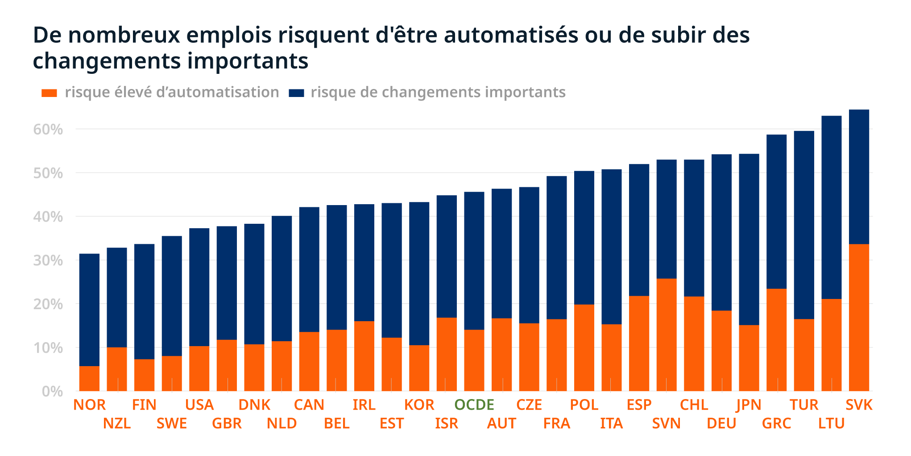

Les enjeux économiques et sociaux
L’automatisation des processus métiers a un but clair : réduire le nombre de tâches afin de maximiser la productivité. Le secteur est en pleine croissance et ses apports sont considérables. Selon ISG Automaton Index[1], les RPA réduisent de 37 % les besoins en ressources dans la finance, la comptabilité et les ressources humaines (à savoir les secteurs les plus touchés). Un grand bénéfice peut ainsi découler de l’utilisation de l’automatisation. De plus, une étude de Gartner[2] indique que le domaine n’a pas souffert de la crise sanitaire. Au contraire, celui-ci voit une croissance de presque 20 % entre 2020 et 2021. De plus, 90 % des grandes organisations devraient avoir adopté la RPA d’ici 2022. On note aussi une expansion du secteur d’action, d’ici 2024, plus de la moitié des RPA seront fournies à des entreprises en dehors du domaine de la technologie et de l’information (domaine actuellement en tête des demandes).
Les RPA sont dans une période de croissance énorme et les bénéfices qu’elles apportent sont évidents. Cependant, une question d’avenir peut se poser quant au danger de celles-ci. La réduction numérique des tâches ne serait-elle pas un danger pour nos emplois ?
Les RPA : destructrices d'emploi ?
Ces automatisations permettent de réduire grandement la quantité de tâches à effectuer. Cette absence devrait ainsi entrainer la suppression de nombreux emplois (on peut penser à l’exemple des caisses automatiques, qui semblent rendre obsolète le métier de caissier). D’après l’étude menée par OECD[3] on parlerait de 16 % d’emplois sujet à destruction, et 32% à de radicaux changements dans années à venir.
Le danger des RPA pour les emplois est ainsi évident. On pourrait penser que de nouveaux emplois vont être créés, cependant, leur nombre ne couvrira pas la perte en question. On parle ici de « 16 emplois créés pour 100 supprimés », de quoi raréfier les emplois dans les secteurs touchés.
Les enjeux sociétaux viennent d’une autre façon de voir la controverse : un changement majeur dans notre façon de voir le monde professionnel.
Les RPA, à l'origine d'un boulversement sociétal
Toujours d’après l’étude de l’OECD[3], les plus touchés par la disparition de postes seront les moins qualifiés. En effet, les tâches simples et répétitives sont celles qui seront les plus rapidement automatisées. La suite à prévoir serait un agrandissement de l’écart entre les métiers nécessitant peu de qualifications, et ceux les mieux rémunérés.
Cependant, ce changement majeur dans le marché du travail devrait se rétablir après un temps. En effet, de nombreuses sources indiquent que le gain en productivité apporté par les RPA devrait permettre aux entreprises de s’étendre, et ainsi de recruter massivement.
Il est cela dit important de noter que le secteur de la RPA est encore jeune et sujet à de grands changements. La controverse n’en est qu’à ses débuts, et les prédictions à son sujet sont particulièrement incertaines. Les enjeux que ce secteur fixe vont eux aussi évoluer dans un futur proche, ou non.